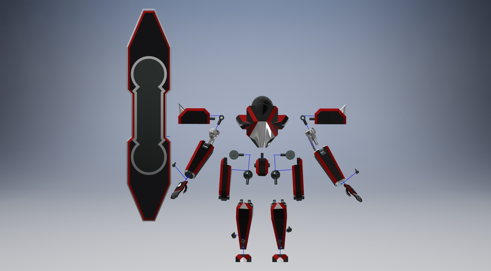

Some plans that I have for yet another redesign to make it more Accurate to the LFO it's designed off of
Planned future upgrades
Some plans that I have for yet another redesign to make it more Accurate to the LFO it's designed off of
The surf board, also known as a REF board which is short for reflection boards
In the show the board can split in the middle and be placed on the hips of the LFO for storage
I plan on cutting the board down the middle and adding attachment points at the hips to allow this. All I would have to do is cut the board in half and take a rectangular cut out of each side and place a folding flap in it's place. The biggest issue would be adding the attachment points to the hips
As it is now, I'm not sure how to attach them at the hips with the current set up. I believe I would need to redesign the hips so that there's an attachment point on each hip.
The surf board, also known as a REF board which is short for reflection boards
In the show the board can split in the middle and be placed on the hips of the LFO for storage
I plan on cutting the board down the middle and adding attachment points at the hips to allow this. All I would have to do is cut the board in half and take a rectangular cut out of each side and place a folding flap in it's place. The biggest issue would be adding the attachment points to the hips
As it is now, I'm not sure how to attach them at the hips with the current set up. I believe I would need to redesign the hips so that there's an attachment point on each hip.
I also plan on giving the LFO the ability to transform slightly. In the show, the LFOs were able to lay down into a vehicle mode to allow for long range travel with low fuel cost. This is a picture of what the vehicle mode looked like in the show.
To be able to do that I would need to add a forward and back folding joint at the waist and add wheels to the legs, feet, and backpack, with the backpack wheels able to extend to touch the ground.
To be able to do that I would need to add a forward and back folding joint at the waist and add wheels to the legs, feet, and backpack, with the backpack wheels able to extend to touch the ground.
Head and Body, third design
I plan on redesigning the head and body a second time to make room for the folding waist design and then remake the backpack and actually add the wheels to the back, which double as thrusters as well, the biggest thing though is the head. I really want to redesign the head to make it fit more with the theme and make it more head like then it currently is. The original inspiration I used for the head was from a completely different medium so it never really fit to begin with
Everything else

I like how most of the parts came out and only need minor tweaks to allow clearance between the connecting pieces because as it stands at the moment none of the parts can actually connect together and move if it was actually made through 3D printing. Most of the parts are either solid tubes and rods with no way of clipping together and are the same exact size. For these to work they need to have notches cut into them so they can clip together and they need some clearance so after they are clipped together they can actually move.
Internal Skeleton
I would really like to redesign the robot from the ground up and make an internal skeleton with the armor snapping around or pressing into the skeleton. I got this idea from a model kit that I had when I was younger and it seems doable. I can use the current parts and cut them into pieces and use a tool in my CADD software to shell them out. I don't feel like it would take long to do this. The longest part would be making the skeleton and adjusting it to the proper size. If I am able to do this though, making upgrades would be as simple as making new shells.